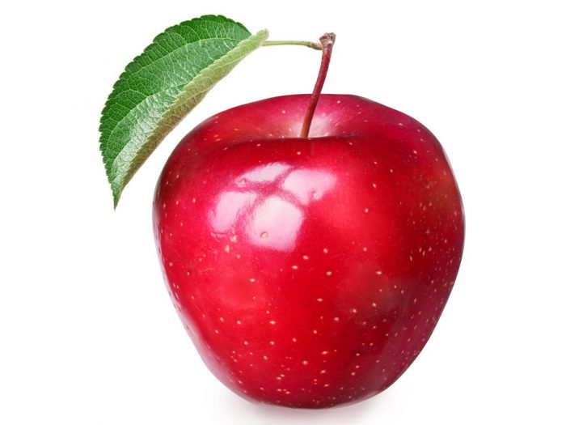

Prophet Orpheus
Home
About Me
My Favorite Foods
Current Weather
Current News
APPLES!!! I love red apples because they are so pretty and they are so sweet.  Green apples are also great because they have such a special flavor that combines sour and sweet!
Go Back